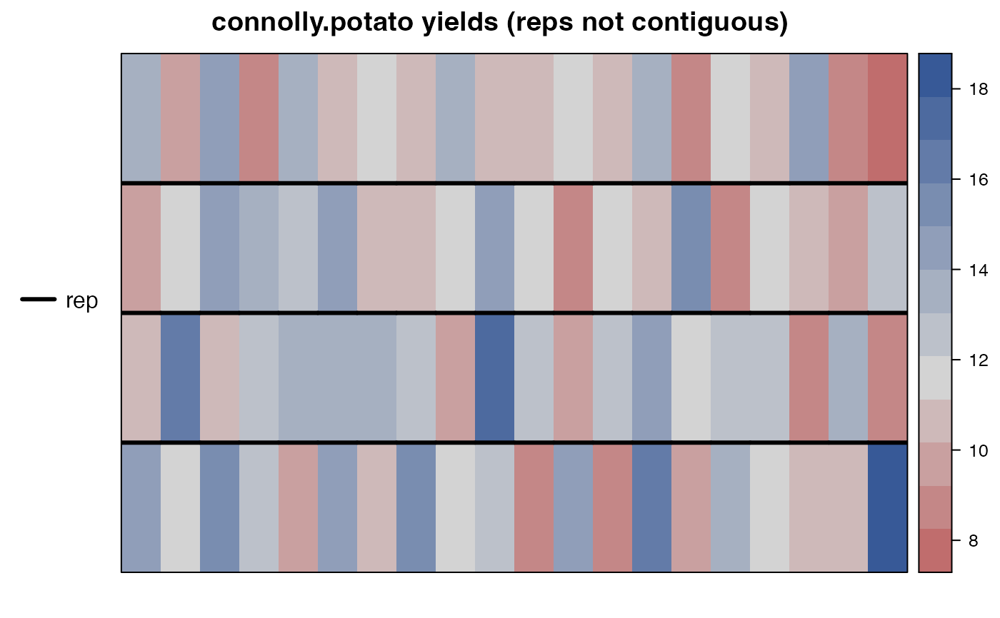
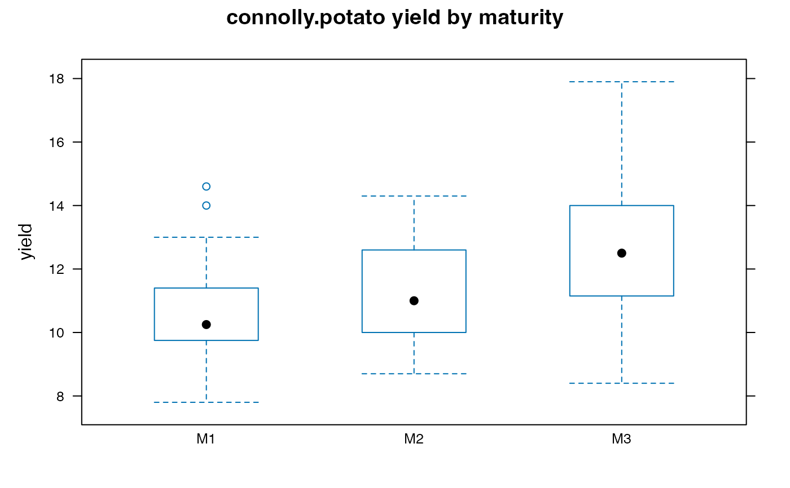
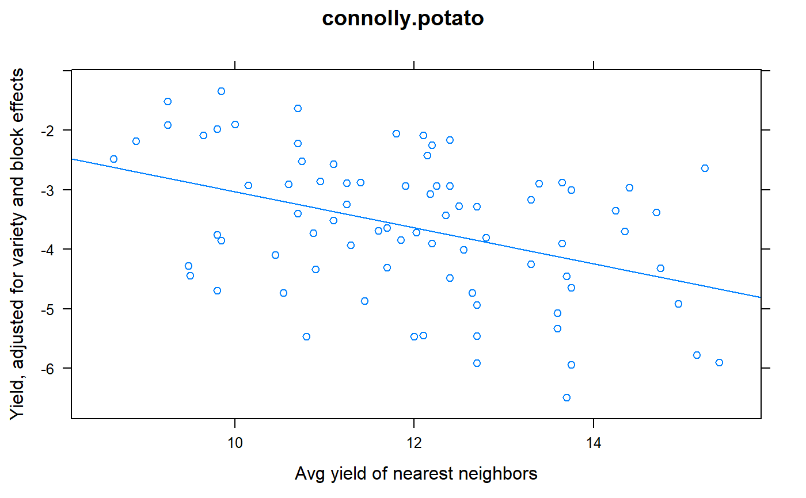

connolly.potato.RdPotato yields in single-drill plots
data("connolly.potato")
A data frame with 80 observations on the following 6 variables.
repblock
genvariety
rowrow
colcolumn
yieldyield, kg/ha
maturmaturity group
Connolly et el use this data to illustrate how yield can be affected by competition from neighboring plots.
This data uses M1, M2, M3 for maturity, while Connolly et al use FE (first early), SE (second early) and M (maincrop).
The trial was 20 sections, each of which was an independent row of 20 drills. The data here are four reps of single-drill plots from sections 1, 6, 11, and 16.
The neighbor covariate for a plot is defined as the average of the plots to the left and right. For drills at the edge of the trial, the covariate was the average of the one neighboring plot yield and the section (i.e. rep) mean.
It would be interesting to fit a model that uses differences in maturity between a plot and its neighbor as the actual covariate.
https://doi.org/10.1111/j.1744-7348.1993.tb04099.x
Used with permission of Iain Currie.
Connolly, T and Currie, ID and Bradshaw, JE and McNicol, JW. (1993). Inter-plot competition in yield trials of potatoes Solanum tuberosum L. with single-drill plots. Annals of Applied Biology, 123, 367-377.
# \dontrun{ library(agridat) data(connolly.potato) dat <- connolly.potato # Field plan libs(desplot) desplot(dat, yield~col*row, out1=rep, # aspect unknown main="connolly.potato yields (reps not contiguous)")# Later maturities are higher yielding libs(lattice) bwplot(yield~matur, dat, main="connolly.potato yield by maturity")# Observed raw means. Matches Connolly table 2. mn <- aggregate(yield~gen, data=dat, FUN=mean) mn[rev(order(mn$yield)),]#> gen yield #> 8 V08 16.200 #> 19 V19 14.450 #> 10 V10 13.925 #> 12 V12 13.500 #> 7 V07 13.300 #> 20 V20 12.975 #> 14 V14 12.975 #> 6 V06 12.625 #> 11 V11 12.575 #> 16 V16 11.900 #> 3 V03 11.650 #> 9 V09 11.500 #> 1 V01 11.275 #> 18 V18 10.650 #> 2 V02 10.325 #> 17 V17 10.200 #> 15 V15 10.125 #> 13 V13 10.050 #> 4 V04 9.425 #> 5 V05 9.275# Create a covariate which is the average of neighboring plot yields libs(reshape2) mat <- acast(dat, row~col, value.var='yield') mat2 <- matrix(NA, nrow=4, ncol=20) mat2[,2:19] <- (mat[ , 1:18] + mat[ , 3:20])/2 mat2[ , 1] <- (mat[ , 1] + apply(mat, 1, mean))/2 mat2[ , 20] <- (mat[ , 20] + apply(mat, 1, mean))/2 dat2 <- melt(mat2) colnames(dat2) <- c('row','col','cov') dat <- merge(dat, dat2) # xyplot(yield ~ cov, data=dat, type=c('p','r')) # Connolly et al fit a model with avg neighbor yield as a covariate m1 <- lm(yield ~ 0 + gen + rep + cov, data=dat) coef(m1)['cov'] # = -.303 (Connolly obtained -.31)#> cov #> -0.3030545# Block names and effects bnm <- c("R1","R2","R3","R4") beff <- c(0, coef(m1)[c('repR2','repR3','repR4')]) # Variety names and effects vnm <- paste0("V", formatC(1:20, width=2, flag='0')) veff <- coef(m1)[1:20] # Adjust yield for variety and block effects dat <- transform(dat, yadj = yield - beff[match(rep,bnm)] - veff[match(gen,vnm)]) # Similar to Connolly Fig 1. Point pattern doesn't quite match xyplot(yadj~cov, data=dat, type=c('p','r'), main="connolly.potato", xlab="Avg yield of nearest neighbors", ylab="Yield, adjusted for variety and block effects")# }